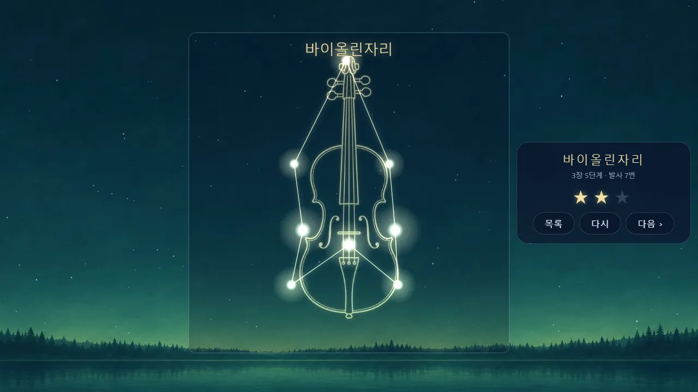
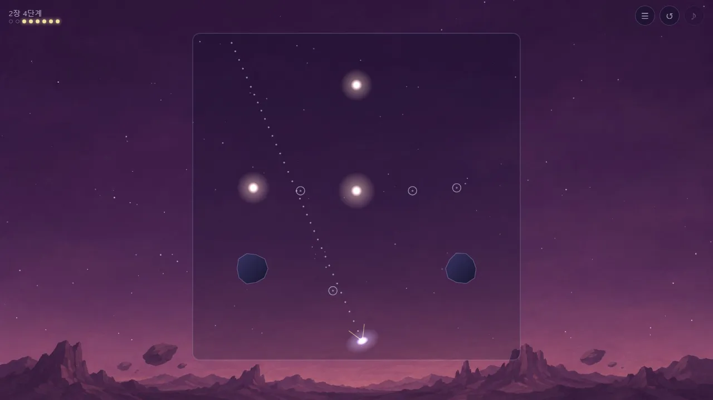
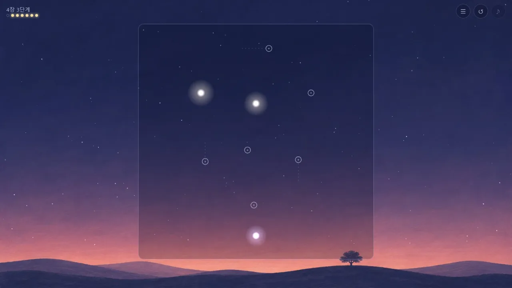
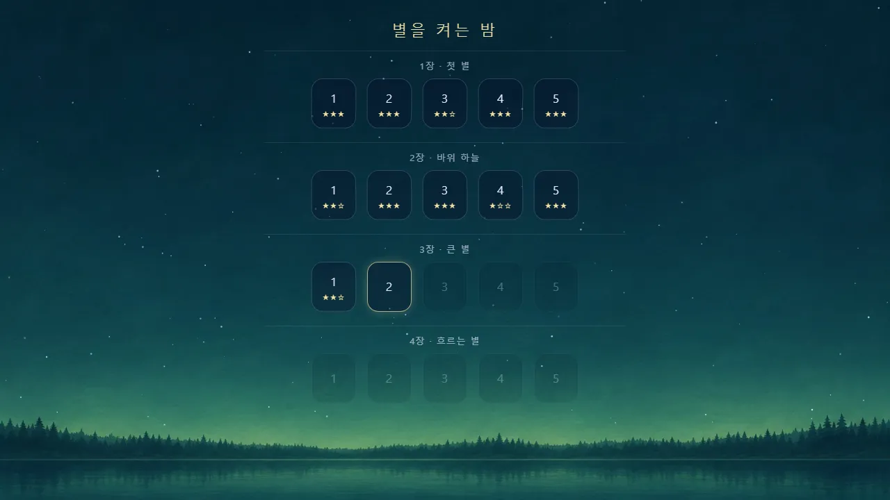

🧩 퍼즐 게임 · 무료 · 설치 없음
별을 켜는 밤
“당겨서, 튕겨서, 별을 켜요”
- 4장 20단계
- 한 단계 1분 안팎
- 단계마다 별점 세 개
- 깬 기록 자동 저장
회원가입 없이 누르면 바로 시작돼요
어떤 게임인가요?
밤하늘의 별이 모두 꺼져 버렸어요. 남은 것은 손바닥만 한 별똥별 몇 개뿐. 별똥별을 뒤로 당겼다가 놓으면 하늘로 날아가며 지나간 자리의 별에 불이 켜져요.
한 번에 다 켤 필요는 없어요. 별하늘 가장자리에 부딪히면 별똥별이 튕겨 나오니, 벽을 이용해 비스듬히 쏘면 한 번에 여러 개를 켤 수 있어요. 마지막 별이 켜지면 별들이 선으로 이어지며 고양이, 고래, 바이올린 같은 별자리 그림이 떠올라요.
장이 바뀔 때마다 하늘도 바뀌어요. 바위가 떠 있는 하늘, 두 번 맞혀야 켜지는 큰 별, 천천히 흐르는 별이 차례로 나와요. 은은한 배경음악 위로 별이 켜질 때마다 맑은 소리가 울려요.
이렇게 해요
- STEP 1
당겨요
화면 아무 곳이나 누른 채 뒤로 끌어요. 점선이 별똥별이 날아갈 방향을 알려 줘요. 멀리 당길수록 세게 날아가요.
- STEP 2
튕겨서 켜요
손을 놓으면 날아가요. 벽에 부딪히면 튕겨 나오고, 지나간 자리의 별이 켜져요.
- STEP 3
별자리 완성
별을 모두 켜면 별자리 완성! 적은 발사로 깰수록 별점이 높아요. 별똥별을 다 쓰면 다시 도전해요.



🌌 네 개의 장
- 1장 첫 별 — 당기고 놓는 법을 익혀요. 작은 등불자리, 종이배자리, 고양이자리…
- 2장 바위 하늘 — 하늘에 뜬 바위에 부딪히면 튕겨 나와요. 바위를 벽처럼 써 보세요
- 3장 큰 별 — 큰 별은 두 번 맞혀야 켜져요
- 4장 흐르는 별 — 천천히 움직이는 별을 노려요
한 단계를 깨면 다음 단계가 열려요. 깬 단계는 언제든 다시 해서 별점을 올릴 수 있어요.
이런 분께 추천해요
- 손맛 있는 한 방, 시원하게 튕기는 맛을 좋아하는 분
- 잠깐씩 머리를 식히며 차분하게 즐길 게임을 찾는 분
- 예쁜 그림과 음악이 있는 조용한 퍼즐을 좋아하는 분
한 번에 모두 켜려고 하지 마세요. 벽에 한 번 튕겨서 두세 개를 지나가는 길이 대개 숨어 있어요. 별똥별은 매번 아래 같은 자리에서 출발하니, 빗나간 발사의 길을 기억해 두었다가 조금씩 고쳐 보세요.
📱 어떤 기기에서 하면 좋을까요?
- 가장 좋아요휴대폰 세로·가로 모두
손가락으로 당겼다 놓아요. 별하늘이 네모라서 세로로 들든 가로로 들든 화면에 맞춰져요.
- 가장 좋아요태블릿 세로·가로 모두
별하늘이 커서 조준하기 가장 편해요.
- 좋아요컴퓨터·노트북 마우스
마우스로 누른 채 끌었다 놓아요. R은 다시 하기, Esc는 단계 목록이에요.
오른쪽 위 메뉴(⋮ 또는 ···)에서 「다른 브라우저로 열기」를 눌러 크롬이나 사파리로 열어 주세요. 앱 안에서는 저장이 풀릴 수 있어요.
🍎 아이폰·아이패드에서는
- ① 사파리로 열기
카카오톡이나 네이버 앱 안에서 열면 깬 기록이 풀릴 수 있어요. 「다른 브라우저로 열기」나 사파리로 열어 주세요.
- ② 화면을 넓게 쓰기
전체 화면 버튼이 없어요. 주소창 왼쪽의 가가(aA) 버튼 → 「도구 막대 가리기」를 누르면 별하늘이 더 커져요.
- ③ 소리
첫 화면을 누르면 음악이 나와요. 무음 스위치가 켜져 있으면 소리가 나지 않아요. 게임 중 오른쪽 위 ♪ 단추로 끄고 켤 수 있어요.
- ④ 기록
깬 단계와 별점은 그 기기에 저장돼요.
🤖 갤럭시 등 안드로이드에서는
크롬이나 삼성 인터넷으로 열면 돼요. 첫 화면을 누르면 음악이 나오고, 깬 단계와 별점은 그 기기에 저장돼요.
▶ 바로 해 보기
설치도, 회원가입도 필요 없어요.
별을 켜는 밤 시작하기game.edoori.co.kr/starnight/